Paleontología Virtual
Día 1: Introducción y Fundamentos
2026-04-15
Motivación
Los fósiles son únicos e irremplazables
- Unicidad: No existe un respaldo físico; cada fósil es irrepetible.
- Vulnerabilidad: La manipulación y el estudio físico pueden causar daños irreversibles.
- Inaccesibilidad: Barreras geográficas y costos de transporte limitan la investigación.
- Riesgo catastrófico: Guerras, desastres e incendios han destruido especímenes para siempre.
Caso 1: El incendio del Museo Nacional de Brasil (2018)
- Más de 20 millones de especímenes destruidos: fósiles, insectos, esqueletos, grabaciones etnográficas.
- Entre ellos, Luzia: uno de los seres humanos más antiguos conocidos de América
- La mayoría de las colecciones paleontológicas no tenían registro digital.
- Pérdida científica incalculable e irreversible.
Caso 1: La digitalización de Maxakalisaurus topai
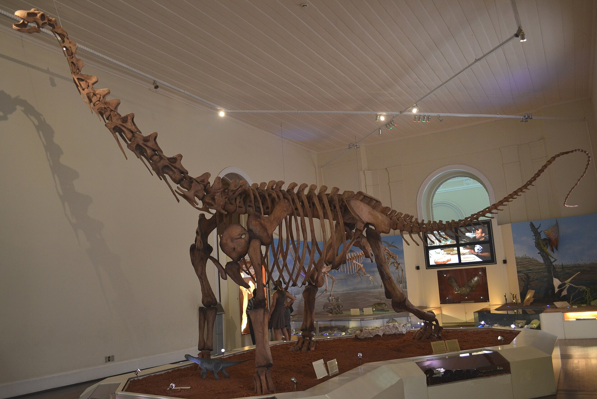
- Titanosaurio del Cretácico de Brasil, alojado en el Museo Nacional.
- Fue digitalizado después del incendio gracias a que existían moldes y réplicas físicas
Caso 2: Spinosaurus aegyptiacus y la Segunda Guerra Mundial
- Ernst Stromer describió Spinosaurus en 1915 a partir de material colectado en Egipto.
- Los especímenes tipo se conservaban en el Museo Estatal de Historia Natural de Baviera, Munich.
- En abril de 1944, los bombardeos aliados destruyeron el museo.
- Los únicos fósiles originales de Spinosaurus desaparecieron para siempre (Ibrahim et al. 2014).
- Durante décadas fue imposible re-estudiar el espécimen — hasta que nuevos fósiles aparecieron en 2008.
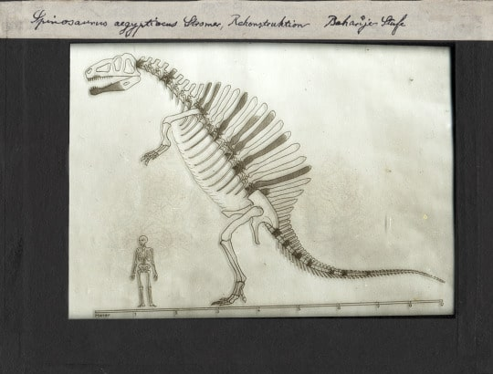
Preguntas clave
- ¿Cómo estudiarlos sin destruirlos?
- ¿Cómo hacer que un fósil en Alemania pueda ser estudiado desde México?
- ¿Y si el fósil se pierde o destruye?
- ¿Cómo preservar su información para futuras generaciones?
¿Qué es la Paleontología Virtual?
La paleontología virtual resuelve el problema del acceso y la preservación
La paleontología virtual es el estudio de los fósiles a través de representaciones digitales interactivas. Emplea tecnologías computacionales y de imagen de vanguardia para obtener información nueva sin necesidad de manipular el espécimen físico (Sutton, Rahman, y Garwood 2014).
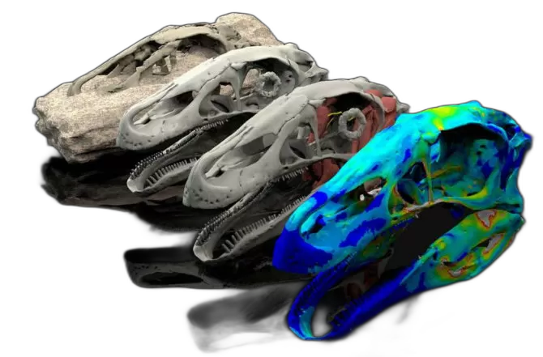
Virtual ≠ Computacional: dos enfoques complementarios
Paleontología Virtual
- Enfoque: Captura y reconstrucción
- Objetivo: Obtener el “fósil digital”
- Herramientas: CT, escaneo láser, fotogrametría
- Resultado: Modelo 3D fiel al espécimen (Sutton, Rahman, y Garwood 2014)
Paleontología Computacional
- Enfoque: Modelado matemático y simulación
- Objetivo: Analizar e interpretar
- Herramientas: Software de análisis estadístico, biomecánico y morfométrico
- Resultado: Hipótesis cuantificadas (Elewa 2011)
El modelo 3D es el puente entre ambas disciplinas.
Mapeando el Territorio Digital
Toda la paleontología virtual es computacional, pero no viceversa. Mientras la computacional maneja números y bases de datos a gran escala, la virtual se enfoca en la representación e interacción geométrica 3D del fósil.
Digitalización 3D
Tres tecnologías producen los modelos 3D
Escaneo láser
Dispositivos de luz estructurada o láser capturan la geometría superficial del fósil con alta precisión.
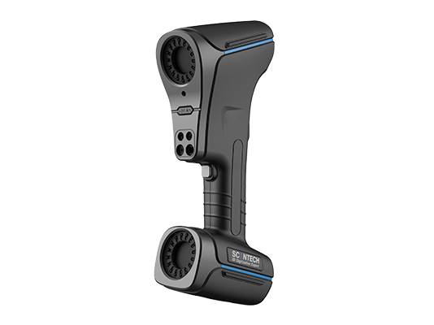
Fotogrametría
Fotografías desde múltiples ángulos son procesadas por software para reconstruir la forma en 3D.
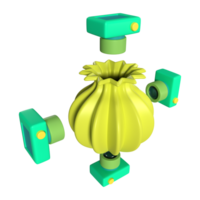
Tomografía computarizada (CT)
Rayos-X en secciones transversales permiten visualizar el interior del fósil sin destruirlo.
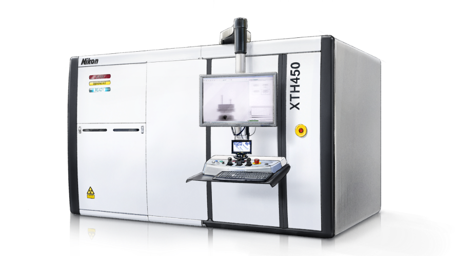
Los Días 2 y 3 cubriremos el flujo de trabajo completo de cada técnica.
Cada técnica tiene su dominio de aplicación
| Escaneo láser | Fotogrametría | Tomografía CT | |
|---|---|---|---|
| Superficie externa | ✓ | ✓ | ✓ |
| Estructura interna | — | — | ✓ |
| Costo | Medio | Bajo | Alto |
| Portabilidad | Media | Alta | Baja |
| Resolución | Alta | Media-Alta | Muy alta |
Formatos de Modelos 3D
Todo modelo 3D es una malla definida por elementos geométricos
Los elementos de una malla
| Concepto | También llamado en… |
|---|---|
| Vértice | Node (FEA/VTK), point (PCL, VTK) |
| Arista | Edge, bond, half-edge (Blender) |
| Cara | Face, polygon, facet, triangle |
| Celda | Cell, element (FEA), voxel (CT) |
| Normal | Face normal, vertex normal |
| UV | Texture coordinate, texcoord |
Tipos de malla
- Superficie (surface mesh): solo caras externas — STL, OBJ, PLY
- Volumétrica (volumetric mesh): incluye el interior — VTK, MSH, XDMF
- Nube de puntos (point cloud): solo vértices, sin conectividad — XYZ, LAS, E57
Blender usa vértices, aristas y caras. VTK habla de points, cells y connectivity array. Son lo mismo con distinto nombre.
Los cuatro formatos más usados en paleontología digital
| Formato | Tipo | Ventajas | Desventajas |
|---|---|---|---|
| STL | Superficie | Universal, simple, 3D printing | Sin color, sin textura, sin escala |
| OBJ | Superficie | Color, UV, materiales (MTL), amplio soporte | Texto plano, pesado, multiples archivos |
| PLY | Superficie | Color por vértice, binario o texto, ligero | Soporte de textura limitado |
| VTK | Volumétrico | FEA, CFD, datos escalares/vectoriales por celda | Poco soporte en software de modelado |
STL y OBJ: portabilidad máxima
STL — Stereolithography
- Inventado en 1987 para impresión 3D.
- Solo triángulos: cada cara tiene 3 vértices y una normal.
- ASCII (legible) o binario (6× más compacto).
- Ningún software lo rechaza.
- Úsalo cuando: exportas para imprimir o para compatibilidad máxima.
- Evítalo cuando: necesitas color o textura.
OBJ — Wavefront Object
- Estándar de facto para intercambio con textura.
- Acompañado de un archivo
.mtl(materiales) y archivos de imagen. - Soporta polígonos n-lados (no solo triángulos).
- Úsalo cuando: necesitas color, UV o exportar a Sketchfab/MorphoSource.
- Evítalo cuando: el archivo supera ~500 MB (texto puro, muy lento).
PLY y VTK: ciencia y análisis
PLY — Polygon File Format
- Creado en Stanford (1994) para escaneo 3D científico.
- Soporta propiedades arbitrarias por vértice: color RGBA, intensidad, curvatura, coordenadas CT.
- Modo binario compacto y rápido de leer.
- Úsalo cuando: el escáner exporta PLY con color o datos adicionales.
- Evítalo cuando: necesitas textura UV mapeada.
VTK — Visualization Toolkit
- Formato de Kitware, diseñado para simulación científica.
- Almacena mallas volumétricas + datos por celda o nodo: tensión, temperatura, presión.
- Dos variantes:
.vtk(legacy, texto/binario) y.vtu(XML, comprimible). - Úsalo cuando: haces FEA, CFD o exportas resultados de simulación.
- Evítalo cuando: solo necesitas geometría para visualización.
Herramientas para convertir entre formatos
GUI (sin código)
- MeshLab — abre y exporta casi todo; filtros de calidad
- Blender — importa STL/OBJ/PLY/FBX; exporta con textura
- ParaView — especializado en VTK y datos científicos
- 3D Slicer — CT → STL/OBJ/VTK (Día 3)
Python (por lotes)
- meshio — 40+ formatos; conserva datos científicos por celda
- trimesh — enfocado en mallas de superficie; más robusto con PLY
- open3d — nube de puntos y mallas; GPU-accelerated
- pyvista — envuelve VTK; gráficas científicas integradas
Línea de comandos
- assimp (
sudo apt install assimp-utils) — convierte 40+ formatos en una línea - meshio-convert — CLI incluido con meshio
- ctmconv — compresión OpenCTM
Convertir una malla con Python: cuatro líneas
El script convert_mesh.py incluido en el curso automatiza esto para uno o varios archivos desde la terminal.
Flujo de trabajo: convertir archivos con el script del curso
# 1. Crear el entorno virtual (solo la primera vez)
python3 -m venv venv
source venv/bin/activate # Linux/Mac
# venv\Scripts\activate # Windows
# 2. Instalar dependencias
pip install meshio trimesh
# 3. Convertir un archivo
python convert_mesh.py especimen.ply -f obj
# 4. Convertir varios archivos a la vez
python convert_mesh.py *.ply -f stl
# 5. Ver todos los formatos disponibles
python convert_mesh.py --list-formats¿Por qué un entorno virtual? Evita conflictos entre versiones de librerías de distintos proyectos. meshio y trimesh se instalan solo dentro de ese entorno y no afectan el resto del sistema.
Repositorios y Bases de Datos
GB3D Type Fossils Online
- Repositorio de fósiles tipo británicos.
- Modelos 3D de alta calidad.
- Permite acceso a archivos originales (STL, PLY, OBJ).
- Facilita la citación académica de conjuntos de datos.
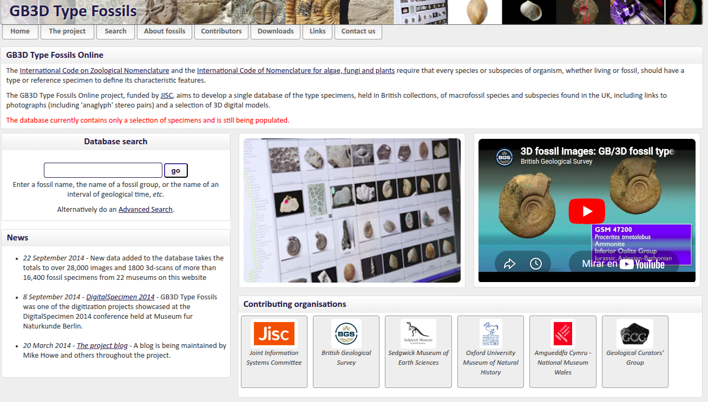
MorphoSource
- Repositorio científico en morfología 3D.
- Decenas de miles de especímenes escaneados.
- Contiene datos de CT, escaneo láser y fotogrametría.
- Permite acceso a archivos originales (STL, PLY, OBJ).
- Facilita la citación académica de conjuntos de datos.
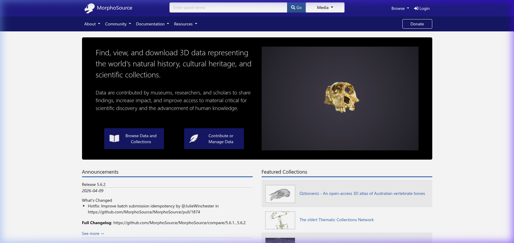
Sketchfab
- Plataforma líder de visualización 3D en la web.
- Ampliamente usada por museos y colecciones científicas.
- Permite la visualización interactiva sin necesidad de software especializado.
- Sus modelos son embebibles en páginas web.
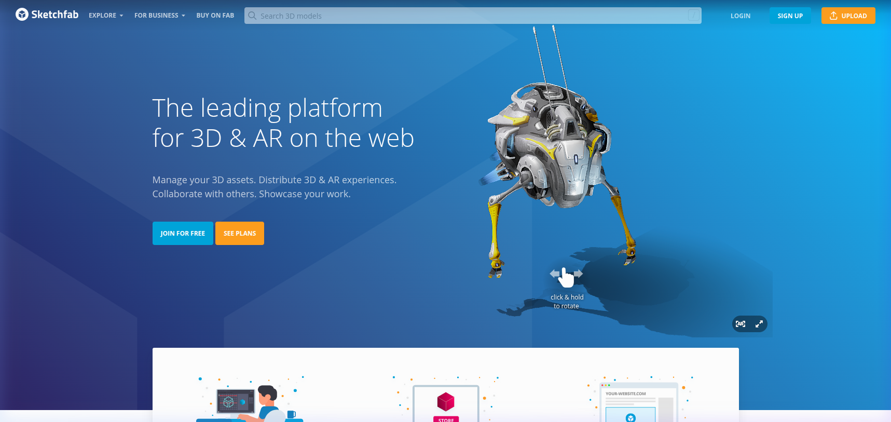
UMORF (University of Michigan)
- Repositorio del Museo de Paleontología de la Universidad de Michigan.
- Extenso catálogo de fósiles de vertebrados, invertebrados y modelos 3D interactivos.
- Orientado fuertemente a la educación y divulgación abierta en ciencias biológicas.
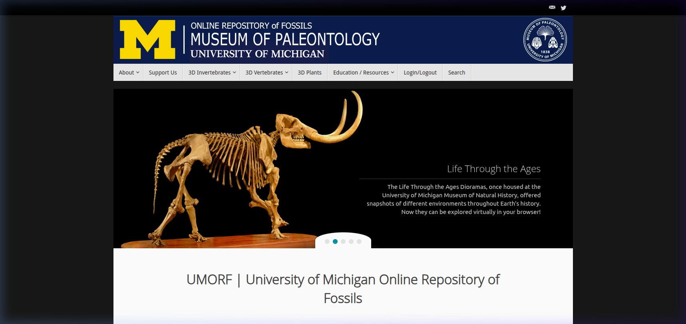
DigiMorph
- Pionero en tomografía de alta resolución de vertebrados e invertebrados, operado por UT Austin.
- Incluye animaciones, secciones anatómicas y modelos de superficie.
- Colección extensa construida tras décadas de investigaciones morfológicas.
Phenome10K
- Biblioteca digital gratuita de microCT y escaneos de superficie.
- Contenido: Especies actuales y fósiles (cráneos, esqueletos y tejidos blandos).
- Acceso: Visualización libre; requiere cuenta gratuita para descargar archivos STL.
- Origen: Creado por la Dra. Anjali Goswami y mantenido por el Natural History Museum de Londres.
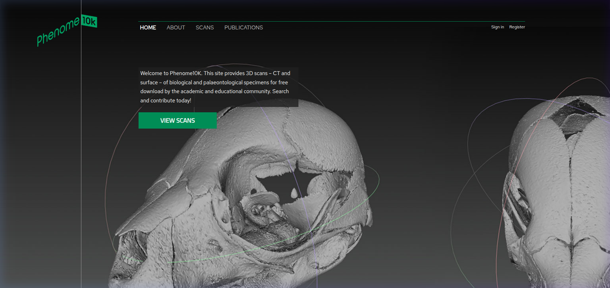
En la sesión práctica descargaremos y exploraremos especímenes de estos repositorios.
Usos de los Modelos 3D
Los modelos 3D abren cuatro grandes líneas de aplicación
1. Preservación del patrimonio
El modelo digital existe aunque el fósil sea dañado, perdido o destruido. Permite compartir sin riesgo de deterioro.
2. Difusión del conocimiento
Museos virtuales, exhibiciones interactivas y materiales educativos accesibles desde cualquier lugar.
3. Reconstrucción de organismos extintos
Restaurar morfología perdida, reconstruir tejidos blandos y generar hipótesis sobre apariencia en vida.
4. Análisis cuantitativo (lo que veremos en los Días 5–7)
Morfometría, biomecánica y dinámica: estudiar forma y función sin tocar el fósil.
Áreas de Análisis
El modelo 3D es el punto de partida de cuatro grandes técnicas analíticas
Para biólogos y paleontólogos, la digitalización no es el fin sino el inicio del análisis:
- Morfometría Geométrica — cuantificar y comparar formas estadísticamente (Día 7)
- Análisis de Elementos Finitos (FEA) — simular fuerzas, tensiones y deformaciones (Día 6)
- Dinámica Multicuerpo (MDA) — simular movimientos articulares y musculares (Días 5–6)
- Dinámica de Fluidos (CFD) — estudiar locomoción en medios acuáticos o aéreos
Un flujo de trabajo integrador conecta digitalización y análisis
Espécimen físico
│
▼
Digitalización 3D ──────────── Días 2 y 3
(CT / Láser / Fotogrametría)
│
▼
Optimización del modelo ─────── Día 4
(limpieza de malla, retopología)
│
▼
Reconstrucción muscular ──────── Día 5
│
▼
Análisis biomecánico / FEA ───── Día 6
│
▼
Morfometría Geométrica ──────── Día 7Conclusiones del Día 1
La paleontología virtual resuelve limitaciones fundamentales del trabajo con fósiles
- Los fósiles son únicos e irremplazables — la digitalización permite estudiarlos sin riesgo
- Tres tecnologías producen modelos 3D: escaneo láser, fotogrametría y CT — cada una con su dominio
- Repositorios como MorphoSource y Sketchfab hacen accesibles miles de especímenes digitales
- El modelo 3D es el inicio, no el fin: habilita morfometría, biomecánica y simulación
- La paleontología virtual es interdisciplinaria: combina paleontología, informática, ingeniería y biología
Referencias

E. Miguel Díaz de León Muñóz · Museo Virtual Nacional